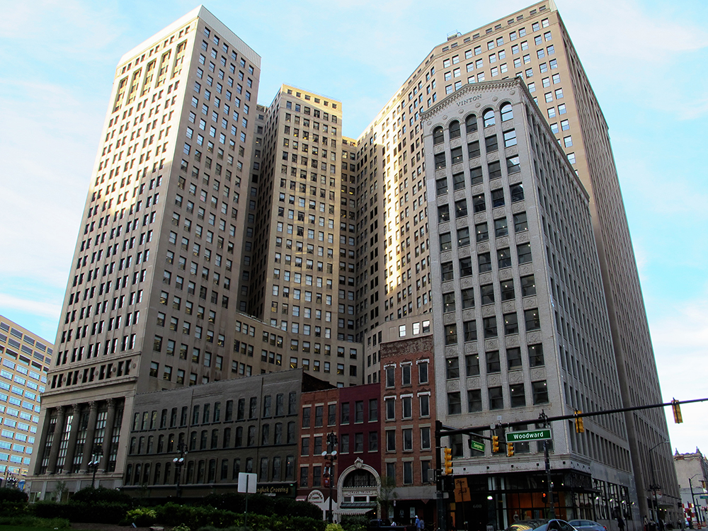

In 1971, this sprawling downtown office building, designed by Albert Kahn and Wirt Rowland in the Neoclassical style and built between 1921 and 1930, becomes the site of Message to Demar and Lauri, downtown Detroit's first, large-scale geometric mural.
The same year that Message to Demar and Lauri is painted onto the First National, a solo show of David Rubello's work, including paintings as large as 4' x 8', inaugurates the building's new art gallery. (Rubello requests that the gallery's walls be painted black.) When he visits the gallery to drop off his paintings, the creation of Message to Demar and Lauri is in process and Rubello spends a few minutes chatting with the two mural painters as they prepare to ascend.
Later that day, there is an accident and one of the painters falls, Rubello recalls, 14 stories to the parking lot below. He survives, but is paralyzed for the rest of his life.
See EMPIRE BUILDING , JULIAN C MADISON BUILDING , and MESSAGE TO DEMAR AND LAURI .